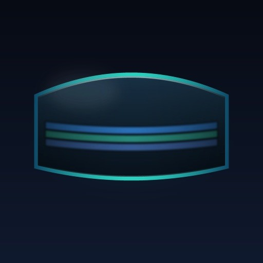
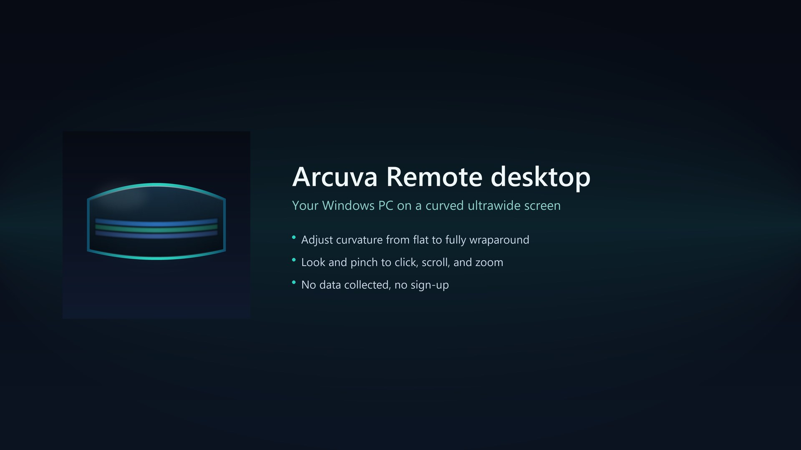
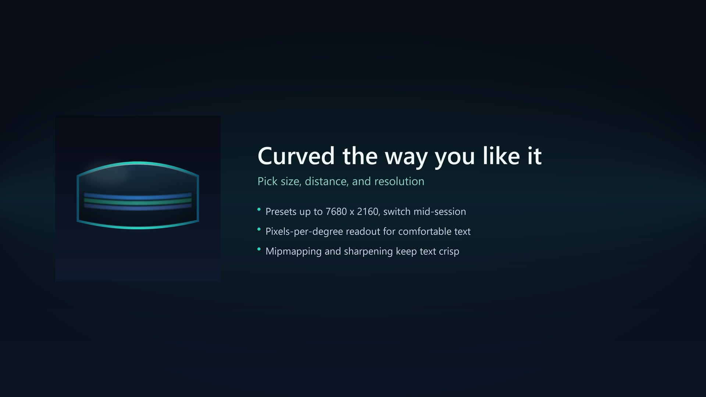
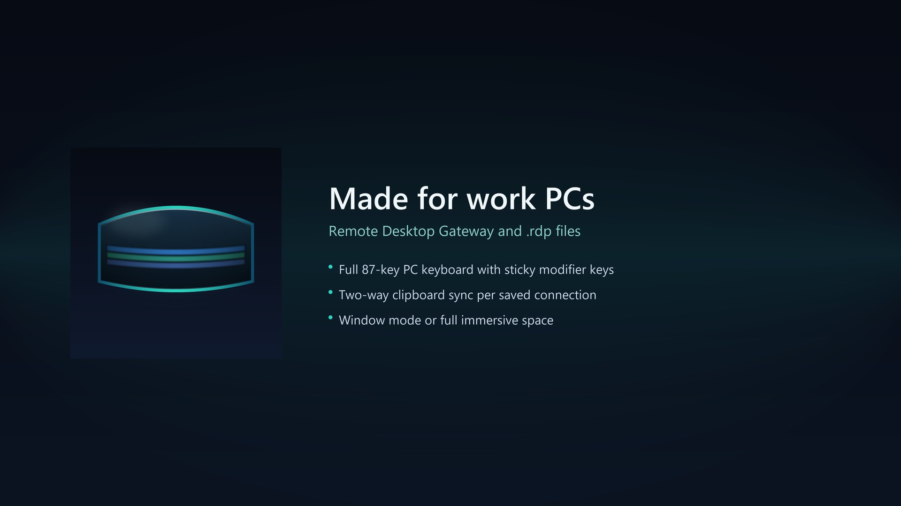

Arcuva Remote desktop
把 Windows 放进一块可以弯曲的带鱼屏
已发布visionOSv2.0
介绍
弧境 Arcuva 是为 Apple Vision Pro 设计的空间计算远程桌面。它把你的 Windows 电脑放进一块可以弯曲的超宽屏：曲率、尺寸、视距都能调，从平面一直到环绕你的同心曲面。 分辨率预设包括 2560×1080、3440×1440、5120×1440、7680×2160，连接中途也能切换。实时显示当前清晰度（像素/度），帮你找到最舒服的大小。画质上关掉了色调映射，白色不发灰；放大时用 MetalFX 让文字边缘更锐利。 操作可以看着目标捏一下，也可以像触摸屏一样直接用手指点，沉浸空间里最多支持十指。鼠标指针模式把屏幕当触控板用。还有 87 键 PC 虚拟键盘，Ctrl、Alt、Win 可粘滞，一键发送 Ctrl+Alt+Del，支持蓝牙键盘按物理位置直通。 适合公司电脑：支持远程桌面网关，能直接导入 IT 部门给的 .rdp 文件，每台电脑可以保存多个账号。不需要注册，不收集数据，密码只保存在本机钥匙串。
功能
- 曲率从平面到同心无级可调，尺寸与视距自定
- 最高 7680×2160，连接中途可切分辨率
- 实时显示像素/度，帮你找到最舒服的大小
- 捏合即点击，或直接用十指点按屏幕
- 87 键 PC 虚拟键盘，一键发 Ctrl+Alt+Del
- 支持远程桌面网关与 .rdp 文件导入
截图


